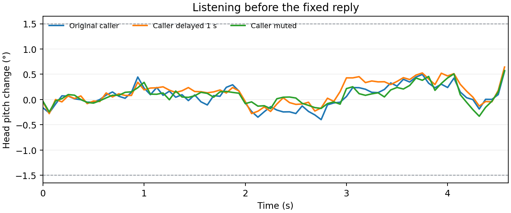

The caller audio is original, delayed by exactly one second, or silent before model encoding. All three panels use the same generated reply, portrait, checkpoint, and random seed. This player contains only the shared reply audio.
All three head-pitch peaks landed at 4.56 s, just before the reply. None reached the 1.5° excursion-and-return criterion for a visible nod. This is one controlled replay.
